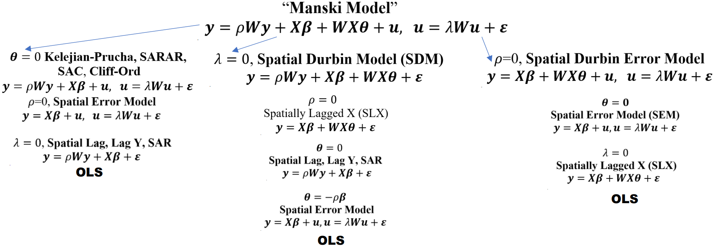

Spatial
Misc
- Also see
- Packages
- {conleyreg} - Allows for serial correlation over all (or a specified number of) time periods, as well as spatial correlation among units that fall within a certain distance of each other.; Alternative to using a geospatial variable (e.g. region, country) as a fixed effect.
- Fits ols, logit, probit, and poisson models with Conely SEs
- Handles panel data with formula options to specify fixed effects
- Conely SEs assume that the degree of correlation in errors decays as the distance between two locations increases.
- Use a distance-based correction to account for spatial dependence. The errors of observations close to each other are assumed to be correlated, but this correlation weakens as the geographical distance between them increases. This allows for a more continuous and flexible adjustment to the error structure across space.
- {pmlsp} - Estimate spatial autoregressive nonlinear probit models with and without autoregressive disturbances using partial maximum likelihood estimation
- Documentation is sparse, but go to function reference >> model function for a better understanding of what this is.
- {pysal} - Geospatial data science with an emphasis on geospatial vector data
- Spatial regression and statistical modeling on geographically embedded networks
- Spatial econometrics
- Anselin’s jupyter notebooks
- {spatemR} - Generalized Spatial Autoregressive Models for Mean and Variance
- Extends classical methods like logistic Spatial Autoregresive Models (SAR), probit Spatial Autoregresive Models (SAR), and Poisson Spatial Autoregresive Models (SAR),
- Built on top of {gamlss} so splines can be included.
- {SpatialInference} - Estimates a linear regression via {lfe::felm}
- Augments the output with Moran’s I tests for spatial autocorrelation
- Optional correlograms for range estimation in order to compute Conley spatial HAC standard errors.
- Includes more kernel options than {conelyreg} (Besides the Barlett, the Epanechnikov kernel is also recommended)
- Handles panel data with formula options to specify fixed effects. See Details section of {lfe::felm} for information of the formula syntax. (Pay attention to the group variable section. In the SpatialInference vignette, latitude and longitude variable are specified there)
- Able to display results via {modelsummary::modelsummary} and comes with custom
tidyandglancemethods from {broom}.
- {spatialreg} - OG; Various methods of spatial regression, Bivand’s package
- Spatial Autoregressive Combined (SAC) models combine both a Spatial Autoregression (SAR) model and a Spatial Error (SEM) model
- {spboost} - Gradient Boosting for Nonlinear Spatial Autoregressive Models
- Flexible nonlinear extension of spatial autoregressive (SAR), spatial error (SEM), and spatial autoregressive with autoregressive disturbances (SARAR) models with multiple regression engines
- Available Engines: generalized additive models (‘mgcv’), gradient boosting (‘mboost’), multivariate adaptive regression splines (‘earth’), and ‘xgboost’
- {spdgp} - Simulates data from econometric spatial regression model processes
- {sphet} - Estimation of Spatial Autoregressive Models with and without Heteroskedastic Innovations
- {spldv} - Estimates spatial autoregressive models for binary dependent variables using GMM estimators
- Computes average marginal effects for probit and logit models
- {spmixW} - Bayesian Spatial Panel Data Models with Convex Combinations of Weight Matrices
- Includes Spatial Autoregressive (SAR), Spatial Durbin Model (SDM), Spatial Error Model (SEM), Spatial Durbin Error Model (SDEM), and Spatial Lag of X (SLX) specifications with fixed effects.
- {conleyreg} - Allows for serial correlation over all (or a specified number of) time periods, as well as spatial correlation among units that fall within a certain distance of each other.; Alternative to using a geospatial variable (e.g. region, country) as a fixed effect.
- Resources
- Papers
- Notes from
- Bivand’s slides and source code, Categorical independent variables and spatial regression: interpretation and reporting
- Spatial Data Science, Ch.17
- Geodata & Spatial Regression
Econometric
{kind=link}
Misc
- Workflow (LeSage (2014), What Regional Scientists Need to Know about Spacial Econometrics)
- Does your DGP indicate a local or global model (i.e. SDM or SDEM)?
- See Impacts >> Types for definitions of Local and Global
- See Models >> Nested Structure. SDM (middle column, global) and SDEM (right column, local)
- SAC is also a global model but LeSage doesn’t like the SAC model (left column).
- See Models >> SAC for details.
- I’d need to check the paper, but I think his concerns might be assuaged with the second spatial weights argument (listw2) in the model function
- Use Likelihood Ratio Tests to select between models nested under whichever one you selected
- Does your DGP indicate a local or global model (i.e. SDM or SDEM)?
- The spatial lag is usually taken as the mean of the values of the variable at neighboring observations for row-standardised spatial weights, or the sum for binary spatial weights.
- Relatively dense spatial weights matrices may down-weight model estimates, suggesting that sparser weights are preferable
- The presence of residual spatial autocorrelation need not bias the estimates of variance of regression coefficients, provided that the covariates themselves do not exhibit spatial autocorrelation
- if covariates and the residual are autocorrelated, it is likely that the estimates of variance of regression coefficients will be biased downwards if attempts are not made to model the spatial processes.
- Common use of pre-test strategies for model selection probably ought to be replaced by the estimation of the most general model appropriate for the relationships being modelled.
- All covariates should NOT be added in spatially lagged form
- If the processes in the covariates and the response match, we should find little difference between the coefficients of a least squares and a SEM, but very often they diverge, suggesting that a Hausman test for this condition should be employed.
Models
Nested Structure

- Structure
- SAC \(\rightarrow\) SEM \(\rightarrow\) SAR (aka SLM)
- SDM \(\rightarrow\) SLX \(\rightarrow\) SAR \(\rightarrow\) SEM
- SDEM \(\rightarrow\) SEM \(\rightarrow\) SLX
- SDEM (right) nests: OLS, SLX and SEM, but SEM only nests OLS, not SLX.
- Structure
{spatialreg} Model Functions
model model name maximum likelihood estimation function SEM spatial error errorsarlm(..., Durbin=FALSE)SEM spatial error spautolm(..., family="SAR")SDEM spatial Durbin error errorsarlm(..., Durbin=TRUE)SLM (aka SAR) spatial lag lagsarlm(..., Durbin=FALSE)SDM spatial Durbin lagsarlm(..., Durbin=TRUE)SLX spatially lagged lmSLX(..., Durbin = TRUE)SAC spatial autoregressive combined sacsarlm(..., Durbin=FALSE)GNM general nested sacsarlm(..., Durbin=TRUE)errorsarlmhas a weights argument may be used to provide weights indicating the known degree of per-observation variability in the variance term (not spatial weights)- method (Docs): The method for calculating the log determinant term in the log likelihood function, and defaults to “eigen”, which is suitable for moderately sized datasets
- “eigen” (default): The Jacobian is computed as the product of \(1 - \rho \lambda\) where lambda is the eigenvalue using
eigenw- Computes asymptotic standard error of \(\rho\)
- “Matrix”: Sparse matrix pre-computed Cholesky decomposition with fast updating
- Larger numbers of observations can be handled, but the interval may need be set when the weights are not row-standardized.
- Set
control = list(super = as.logical(NA))to use simplicial decomposition for the sparse Cholesky decomposition. If TRUE, use a supernodal decomposition
- “Matrix_J”: Sparse matrix pre-computed Cholesky decomposition without fast updating
- For strictly symmetric spatial weights lists (“B” and “C”) or made symmetric by similarity for “W” and “S” (See Geospatial, Spatial Weights >> Diagnostics >> Symmetry)
- Larger numbers of observations can be handled, but the interval may need be set when the weights are not row-standardized.
- Set
control = list(super = FALSE)to use simplicial decomposition for the sparse Cholesky decomposition. If TRUE, use a supernodal decomposition
- “spam_update”: Pre-computed Cholesky decomposition with updating
- “spam”: Standard Cholesky decomposition without updating
- For strictly symmetric spatial weights lists (“B” and “C”) or made symmetric by similarity for “W” and “S” (See Geospatial, Spatial Weights >> Diagnostics >> Symmetry)
- “LU_prepermutate”: Standard LU decomposition with updating (pre-computed fill-reducing permutation)
- Alternative sparse matrix decomposition approach
- Larger numbers of observations can be handled, but the interval may need be set when the weights are not row-standardized.
- “LU”: Standard LU decomposition without updating
- Alternative sparse matrix decomposition approach
- Larger numbers of observations can be handled, but the interval may need be set when the weights are not row-standardized.
- “MC”: Monte Carlo Approximation; approximate log-determinant method
- “Cheb”: Chebyshev approximation; approximate log-determinant method
- “moments”: Smirnov/Anselin (2009) trace approximation
- “SE_classic”: Emulates the behavior of Spatial Econometrics toolbox ML fitting functions. Use grids of log determinant values
- “SE_whichMin”, and “SE_interp”: Attempt to ameliorate some features of “SE_classic”. (See docs for details)
- “eigen” (default): The Jacobian is computed as the product of \(1 - \rho \lambda\) where lambda is the eigenvalue using
summaryresults for models with:- \(\rho_{\text{lag}} Wy\) (lagged y) will have a rho estimate
- \(\theta WX\) (lagged covariates) will have lag.<covariate> estimates
- \(\rho_{\text{err}}Wu\) (spatially modelled errors) will have a lambda estimate
- Says when location i’s neighbors’ residual increases by 1 unit on average, then location i’s residual changes by the lambda estimate on average.
- The significance of \(\rho_{\text{err}}\) indicates whether spatial correlation remains in the residuals
- The combined absolute values of \(\rho_{\text{lag}}\) and \(\rho_{\text{err}}\) and their statistical significance give you an idea of how much spatial autocorrelation is being modelled.
- correlation: if TRUE, the correlation matrix of the estimated parameters including sigma is returned and printed.
- Nagelkerke: if TRUE, the Nagelkerke pseudo R-squared is reported
- Fitting Help
- interval: Search interval for autoregressive parameter
- For sparse matrix methods, it may need be set when the weights are not row-standardized.
- pre_eig, pre_eig1, pre_eig2: For adding precalculated eigenvalue vectors which can be computed using
eigenw. Probably useful for optimization. From the examples:lagsarlmjust uses one: pre_eig, e.g.control = list(pre_eig = eig_vec)sacsarlmcan use two: pre_eig1 and pre_eig2- Give the same vector to both arguments.
- small: default 1500; threshold number of observations for asymmetric covariances when the method is not “eigen”
- No idea what this is about, but in the examples in the docs, it was set to 25 when method = “Matrix”. Could just be an optimizaton. e.g.
control = list(small = 25)
- No idea what this is about, but in the examples in the docs, it was set to 25 when method = “Matrix”. Could just be an optimizaton. e.g.
- tol.solve: The tolerance for detecting linear dependencies in the columns of matrices to be inverted. Passed to
solve(default 1.0e-10).- If errors come from
solve, then setting this to a lower value may be necessary to extract coefficient standard errors (for instance lowering to 1e-12) - Errors in
solvecould also indicate that variables have scales differing a lot from the autoregressive coefficient. Rescaling the RHS variables alleviates this better than setting tol.solve to a very small value.- The values in this matrix may be very different in scale, and inverting such a matrix is analytically possible by definition, but numerically unstable.
- If errors come from
- trs: Used when the numerical Hessian is poorly conditioned, and NaNs are generated in subsequent operations
Example:
W <- as(listw, "CsparseMatrix") trs = trW(W, type = "mult") lagsarlm( CRIME ~ INC + HOVAL, data = COL.OLD, listw = listw, method = "Matrix", trs = trMatc )
- interval: Search interval for autoregressive parameter
Spatial Lag Model (SLM) or Spatial Autoregressive (SAR)
\[y = \rho_{\text{lag}}Wy + X\beta + \epsilon\]
- Includes a spatial process for the response
- Lag of Y (endogenous interaction effects):
- Possible space-time dependence (e.g. drug use spreads through space over time)
- Values of Y are jointly determined with that of neighboring agents, or there are “spillover effects”
- Terms
- \(y\) : A \(n\times 1\) vector of observations on a response variable taken at each of \(n\) locations
- \(\rho_{\text{lag}}\) : Scalar spatial parameter
- \(W\) : A \(n\times n\) spatial weights matrix
- \(X\) : A \(n\times k\) matrix of covariates usually including the intercept
- \(\beta\) : A \(k\times 1\) vector of parameters
- \(\epsilon\) : A \(n\times 1\) vector of iid disturbances
Spatial Error Model (SEM)
\[\begin{align} &y = X\beta + u \\ &\text{where} \;\; u = \rho_{\text{err}} Wu + \epsilon \end{align}\]
- Includes a spatial process for the residuals
- \(u\) : A \(n\;\times\;1\) spatially autocorrelated disturbance vector
- \(\rho_{\text{err}}\) : A scalar spatial parameter.
- Can be motivated by spatial heterogeneity (e.g., a spatially correlated fixed effect as in panel data models), an omitted variable with spatially distinct effects, others.
Spatial Durbin Model (SDM)
\[y = \rho_{\text{lag}}Wy + X\beta + WX\gamma + \epsilon\]
- Includes spatial processes for the response and covariates
- \(WX\) : Is the spatially weighted, lagged covariates term
- \(\gamma\) : A \(k\;' \times 1\) vector of parameters where often \(k' = k - 1\) when using row-standardized spatial weights and ommitting the spatially lagged intercept.
- Can be motivated by assuming that there is a spatially correlated omitted variable (e.g. environmental amenities, highway accessibility, community social capital)
- The indirect spillover effect produced by the SDM model is both local and global with no prior restrictions on the magnitudes of these effects
- The exogenous regressor of one location casts an effect on the dependent variable of the neighboring locations through feedback loops.
- The feedback loops are a result of the Durbin term due to which a location, say \(i\) affects aneighboring location, say \(j\), which eventually has a consequence on \(i, j = 1,2, \ldots , n\)
- An advantage of the spatial Durbin model is that it produces correct standard errors or t−values of the coefficient estimates also if the true data generating process is a spatial error model
- The SDM model reduces to SEM under a non-linear common factor restriction. Thus, theoretically speaking, the choice between SDM and SEM can be settled by performing astatistical test for the common factor restriction.
- Rao’s score test principle which is asymptotically equivalent to the Likelihood Ratio Test (LRT) but computationally much simpler
- Use of the likelihood ratio test (LRT) is not attractive for testing a non-linear hypothesis, since LRT requires maximum likelihood estimation both under the null and the alternative hypotheses.
General Nested Model (GNM) or General Nested Spatial Model (GNS)
\[\begin{align} &y = \rho_{\text{lag}}Wy + X\beta + WX\gamma + u \\ &\text{where} \;\; u = \rho_{\text{err}} Wu + \epsilon \end{align}\]
- Includes a spatial process to the response, covariates, and residuals (kitchen sink model)
- AKA Manski Model
- Issue: The GNS is only weakly (or not?) identifiable
- Not recommended
- Analogous to Manski’s reflection problem on neighborhood effects: If people in the same group behave similar, this can be because
- Imitating behavior of the group
- Exogenous characteristics of the group influence the behaviour
- Members of the same group are exposed to the same external circumstances.
- We just cannot separate those in observational data.
Combined Spatial Autocorrelation (SAC)
\[\begin{align} &y = \rho_{\text{lag}}Wy + X\beta + u \\ &\text{where} \;\; u = \rho_{\text{err}} Wu + \epsilon \end{align}\]
- No spatial process for covariates
- AKA Spatial AutoRegressive-AutoRegressive (SARAR), Kelejian-Prucha, Cliff-Ord
- Issue: Using the same W matrix for lag and error terms can lead to identification problems.
sacsarlmhas a listw2 argument to pass a second spatial weights matrix- Bivand doesn’t use it in his example though
Spatially Lagged X Model (SLX)
\[y = X\beta + WX\gamma + \epsilon\]
- Only has a spatial process for the covariates
- If explanatory variables of area i might affect its neighbor j
Error Durbin model (SDEM)
\[\begin{align} &y = X\beta + WX\gamma + u \\ &\text{where} \;\; u = \rho_{\text{err}} Wu + \epsilon \end{align}\]
- No spatial process for the response
{kind=link}
Impacts
- Misc
- Notes from
- AKA Marginal Effects
- A model will have either local direct, indirect, and total impacts or global direct, indirect, and total impacts.
- Standard error estimates from SEM and SDEM models (fit by maximum likelihood) and have been corrected by multiplying them by \(N∕(N - k)\) can be compared to OLS and SLX standard error estimates. (section 3.3)
- Code
Just the impact point estimates:
impacts(mod, listw = listw_obj)W/p-values:
summary(impacts( mod, listw = listw_obj, R = 500, zstats = TRUE ))
- Types
- Direct impacts measure the effect of changing an explanatory variable in a specific location on the dependent variable in that same location. This is analogous to traditional regression coefficients but accounts for spatial feedback effects when lagged endogenous variables are present (i.e. lagged response).
Note that all variation in the impacts matrix comes from the variation in the spatial weights matrix which we’ve specified a priori.
- i.e. it’s sort of subjective since we choose the neighboring scheme, weighting method, and normalization method. \(W\) is not directly estimated from the data.
- I guess we could treat those choices as hyperparameters though.
For a GNM,
\[S_r(W) = ((I - \rho_{\text{lag}}W)^{-1}(I\beta_r + W\gamma_r)\]
- \(S_r(W)\) (the partial derivative) expresses the direct impacts (effects) on its principal diagonal, and indirect impacts in off-diagonal elements.
For SAR,
\[S_r(W) = (I - \rho_{\text{lag}}W)^{-1}\]
For SLX, SDEM,
- \(\beta_k\) is the average (local) direct impact (covariate coefficient) and \(\gamma_k\) is the average (local) indirect impact (lagged covariate parameter)
- Feedback Effects are where the initial change in a location influences neighboring locations, which in turn influence the original location back.
- My \(X\) influences my \(Y\) directly, but my \(Y\) then influences my neigbour’s \(Y\), which then influences my \(Y\) again (also also other neighbour’s \(Y\)s). Thus the influence of my \(X\) on my \(Y\) includes a spatial multiplier
- Global impacts provide system-wide average measures of direct, indirect, and total effects. Effects spread to all neighbors (i.e. includes higher order neighbors) but decrease with distance. Global spillover effects can be seen as a kind of diffusion process.
- Seen as crucial for reporting results from fitting models including the spatially lagged response (SLM, SDM, SAC, GNM) which assume global dependence, and has been extended to models with spatially lagged covariates (SLX, SDEM).
- Issue: These processes happen over time. In a cross-sectional framework, the global spillover effects are hard to interpret. Anselin (2003) proposes an interpretation as an equilibrium outcome, where the partial impact represents an estimate of how this long-run equilibrium would change due to a change in \(x_k\).
- Example: A public railway is built (exogenous effect) and connects the business district to other key areas in the city
- The new transit station drastically increases the desirability of District A. This surge in desirability leads to a sharp increase in demand for housing in District A.
- Because housing supply is fixed in the short term (you can’t instantly build new houses), this increased demand results in a significant increase in house prices in District A.
- Potential homebuyers who were priced out of District A will now look for the next best alternative. District B, which is adjacent to District A and might have similar housing stock but without the direct train access, suddenly becomes a more attractive option by comparison. These buyers bring their increased willingness-to-pay with them.
- This effect continues to ALL higher order neighbors, but weakens the further the district is from a railway station.
- The new transit station drastically increases the desirability of District A. This surge in desirability leads to a sharp increase in demand for housing in District A.
- Indirect impacts (aka Spillover Effects) capture how changing an explanatory variable in one location affects the dependent variable in neighboring locations through spatial interdependencies. These effects propagate through the spatial weights matrix.
- Local impacts allow these effects to vary across different locations. This is particularly relevant in weighted spatial regression and other spatially varying coefficient models, where the relationship between variables can differ across space due to local conditions, policies, or characteristics.
- In Spatial Lag of X (SLX) model or the Spatial Durbin Error Model (SDEM), the influence of a change in an explanatory variable is restricted to a defined neighborhood of the initial location.
- These models assume local dependence. The impact does not propagate endlessly throughout the system. This more contained spillover is referred to as a local impact.
- Only direct neighbors – as defined in \(W\) – contribute to local spillover effects. The coefficients only estimate how my direct neighbour’s \(X\) values influence my own outcome \(Y\).
- There are no higher order neighbors involved (as long as we do not model them), nor are there any feedback loops due to interdependence.
- Local impacts may be reported for SDEM and SLX models, using a linear combination to calculate standard errors for the total impacts of each covariate (sums of coefficients on the covariates and their spatial lags)
- Example: The effect of environmental quality on house prices
- The environmental quality in the focal unit itself but also in neighbouring units could influence the attractiveness of a district and its house prices.
- Therefore, it seems reasonable to assume that we have local spillover effects: only the environmental quality in directly contiguous units (e.g. in walking distance) is relevant for estimating the house prices.
- Example: DUIs (source)
- Data on DUI counts (response) and covariates are at the county level
- Covariates are % population are baptists (dry), liquor sold per capita, % population is college students (drunk kids), avg distance between liquor stores and homes, avg distance between restaurants w/liquor and homes, % recreation/entertainment workers (tourism)
- Does a change in any of these covariates in one county affect the count of DUIs in ALL other counties in the state (global) or just the counties neighboring a particular county (local)?
- Likely just neighboring counties, so we should use a local model.
- In Spatial Lag of X (SLX) model or the Spatial Durbin Error Model (SDEM), the influence of a change in an explanatory variable is restricted to a defined neighborhood of the initial location.
- Spillover Effects - See Indirect Effects
- Total impacts are simply the sum of direct and indirect impacts, representing the overall effect of changing a variable across the entire spatial system.
- Direct impacts measure the effect of changing an explanatory variable in a specific location on the dependent variable in that same location. This is analogous to traditional regression coefficients but accounts for spatial feedback effects when lagged endogenous variables are present (i.e. lagged response).
- Interpretation
- Direct Impacts represent the average change in the dependent variable at location \(i\) from a one-unit change in the explanatory variable at location \(i\).
- An average effect of a unit change in \(x_i\) on \(y_i\)
- Example: If the direct impact of police spending (in $1000s) is 0.15 for crime reduction, then a $1,000 increase in police spending in a city reduces crime in that same city by 0.15 units on average.
- Indirect Impacts represent the average change in the dependent variable at location \(i\) from a one-unit change in the explanatory variable at all other locations \(j \ne i\).
- How a change in \(x_i\), on average, influences all neighboring units \(y_j\) .
- For global models: A change of \(x_i\) in the focal units flows through the entire system of neighbors (direct neightbors, neighbors of neighbours, …) influencing ‘their ’ \(y_j\). One can think of this as diffusion or a change in a long-term equilibrium.
- Example: If logNO2 increases by one unit, this increases the house price in the focal unit by 0.448 units. Overall, a one unit change in logNO2 increases the house prices in the entire neighborhood system (direct and higher order neighbours) by 0.754.
- Example: If the indirect impact is 0.08, then a \(\$1,000\) increase in police spending in city \(i\) reduces crime in all other cities by 0.08 units on average through spillover effects.
- Local
- Example: % of county population employed by the entertainment industry (i.e. tourism proxy) is shown to have a significant indirect impact on the count of DUIs in a county. Although, the total impact for this variable is not significant. (source)
- Indirect: Says counties with any neighbors building a casino/hotel/etc which would increase their population that’s employed by the entertainment/hotel/etc. industry should be prepared for an increase in DUIs
- Total: Says that the state shouldn’t expect DUIs to significantly increase statewide and there’s no evidence to indicate changes in policy are necessary.
- I don’t agree with this interpretation. Sounds like the interpretation of a global model’s total impact.
- I think maybe this should be interpreted for group of counties (i.e. a county and it’s neighbors) and not statewide. So the total DUIs in a neighborhood which includes a county with a substatial proportion of entertainment workers should expect that total to be significantly affected.
- Example: % of county population employed by the entertainment industry (i.e. tourism proxy) is shown to have a significant indirect impact on the count of DUIs in a county. Although, the total impact for this variable is not significant. (source)
- Remember it’s the average. The effect on location \(i\) from each other location will vary according to spatial relationships encoded in the spatial weights matrix.
- A change in city \(j\) can affect city \(i\) both directly (if they’re neighbors) and indirectly through intermediate cities in the spatial network (i.e. the effect generated in other cities spilling over into a city).
- For SLX models, nothing is gained from computing the “impacts,” as they equal the coefficients. Again, it’s the effects of direct neighbours only (i.e. a local indirect impact).
- Total Impacts represent the overall effect of a change in an explanatory variable across all locations in the study area. In essence, it captures the entire spatial multiplier effect
- Example: Human Capital’s impact on regional labor productivity
- “A ceteris paribus increase in the level of human capital is found to have a significant and positive direct impact. But this positive direct impact is offset by a significant and negative indirect (spillover) impact leading to a total impact that is not significantly different from zero.”
- Example: Human Capital’s impact on regional labor productivity
- Direct Impacts represent the average change in the dependent variable at location \(i\) from a one-unit change in the explanatory variable at location \(i\).
Prediction
Misc
predict- listw: Should be a spatial weights object for whole dataset
- i.e. it needs to have all possible ‘row.names’.
- e.g. for out-of-sample, this should be a listw created from the data before it’s split into training and test.
- This seems like this procedure wasn’t considered for a production use case where there are future new unexpected units.
- Maybe you can get around this manually just adding the new unit to the original dataset and recreating listw object for it.
- Maybe setting
row.namesmanually to an id variable, because it looks like it uses row numbers by default. If you add the new unit it the end of the data.frame and keep the same order, maybe using row numbers doesn’t matter either.
- SLX (
lmSLX) has it’s own prediction method and doesn’t have a pred.type argument. So I’m not sure what kind of predictions it’s able to do.- Doesn’t seem to handle out-of-sample but does handle in-sample and forecast
- listw: Should be a spatial weights object for whole dataset
- Notes from
- About predictions in spatial autoregressive models: optimal and almost optimal strategies, Goulard et all 2017 (See R >> Documents >> Geospatial)
- Breaks down TS, TC, BP, BPN, BPW and compares out-of-sample performance
- The relative efficiencies of various predictors in spatial econometric models containing spatial lag, Kelejian and Prucha 2007
- Compared 5 prediction methods on two matrices which differed by sparseness
- About predictions in spatial autoregressive models: optimal and almost optimal strategies, Goulard et all 2017 (See R >> Documents >> Geospatial)
- TL;DR Goulard et all 2017
- Sparse \(W\) Matrix (Spatial Weights Matrix):
- BPN is best in performance but maybe a little more computationally expensive than {.arg-text} and TS
- TC is the only method that performs notably worse than the others. The rest are very close to each other with the rank being BP, BPN, BPW, and TS.
- Dense \(W\) matrix:
- All methods have almost identical performance
- Sparse \(W\) Matrix (Spatial Weights Matrix):
- TL;DR Kelejian and Prucha 2007
- In both types of \(W\) matrices (differing by sparseness):
- By far, the largest mean squared errors correspond to KP1 (aka TC1)
- If there were tiers, then KP4 (aka TS1) would be in the next worst tier
- KP3 (similar to BP1) had the best results; followed by KP2 (similar to BPW). They would be in the last tier.
- In both types of \(W\) matrices (differing by sparseness):
- Check sparsity:
mean(spdep::card(nb_list))- nb_list is a neighbors list and I think just printing the object also gives you the average number of links
- That gives the average number of neighbors each unit has.
- Example: if on average each unit has around 8 neighbors out of roughly 2500 total units, then that would be extremely sparse.
- “BP” uses a weighted sum of all in-sample residuals for its correction factor. The weights are included in the form of a precision matrix (function of \(W\)) and reflects how strongly each in-sample unit is spatially connected to the out-of-sample unit being predicted.
\[\hat Y_O^{BP} = \hat Y_O^{TC} - Q_{OO}^{-1}Q_{OO} \times (Y_S- \hat Y_S^{TC})\]- \(\hat Y_{TC}\): The trend corrected prediction
- \(Q_{OO}^{-1}Q_{OO}\): Is the covariance matrix which is calculated using the precision matrix, \(Q\), which is calculated using a quadratic expression that has \(W\) (also a 2x2 matrix, so easily calculated).
- \(Y_S - \hat Y_S^{TC}\) is a sort of residual of the observed values and the trend corrected prediction.
- So multiplying an easily calculated covariance matrix times a vector of residuals is the gist of the extra prediction correction here.
- “BPN” does the same as “BP” but drops in-sample non-neighbors to the out-of-sample unit since their weights are very close to zero. Near identical performance when \(W\) is sparse, but also still is close to “BP” even when \(W\) is dense.
- “BPW” has a more complex calculation of residual factor and the residual vector used is calculated as a difference of weighted averages (for a row-normalized \(W\)).
- Replaces \(Q_{OO}^{-1}Q_{OO}\) with a more complex expression that requires an extra matrix inversion.
- Replaces \(Y_S - \hat Y_S^{TC}\) with \(W_{OS}Y_S - W_{OS}\hat Y^{TC}\). The authors claim this results in a loss of information, since you’re calculating the difference of averages. Except you can just factor out \(W_{OS}\) and include it with correction coefficient part of the expression. Then, you’re left with \(Y_S - Y^{TC}\) which means their loss-of-information argument is gone.
- Anyways I do completely agree with computational efficiency aspect and in the paper
Output
- Trend (\(X\beta\)) — The fitted values from the covariate part of the model alone. Tells you the unit’s predicted value if there were no spatial dependence in the data at all.
- Signal (\(\rho W y\) for SLM, SDM) or (\(\lambda W y - \lambda W X \beta\) for SEM, SDEM): The contribution of spatial dependence to the prediction. It’s the influence of neighboring outcomes above and beyond what the covariates already explain.
- Example: If you were modeling voter turnout, a large signal relative to trend for a given voting district means its turnout is being pulled substantially toward its neighbors’ turnout, over and above what its own socioeconomic characteristics (explanatory variables) would predict. This could indicate spillover effects of voter mobilization, regional political culture, etc.
- Diagnostic: If the signal is large and systematic across many units, that’s telling you the spatial model is earning its keep relative to OLS. If the signal is near zero almost everywhere, the spatial term isn’t adding much.
- Noise: Residuals
Types
- In-Sample: Predicting for the units the model was fitted on. The response \(y\) is known, so its spatial lags can be used directly to compute the signal.
- newdata = NULL
- Forecast aka Prevision: The newdata has the same spatial units, different values of the covariates. This is a temporal-style forecast — you’re projecting forward with new \(X\) but the same neighborhood structure and known unit identities.
- newdata has the same row names as model’s listw’s region.id attribute
- Out-of-Sample: The newdata has new spatial units. Now \(y\) is unknown, so the signal cannot use observed \(Wy\) and must be approximated somehow. This is where most of the pred.type proliferation comes from.
- newdata has the different row names as model’s listw’s region.id attribute
- Single-Prediction (aka leave-one-out): Applies the ‘single out-of-sample’ formula to each of the out-of-sample unit separately, ignoring at each stage the remaining \(p − 1\) units.
- Computed separately per unit when newdata has multiple rows.
- It allows the trend-signal strategy to be included which only exists in the single prediction case.
- In-Sample: Predicting for the units the model was fitted on. The response \(y\) is known, so its spatial lags can be used directly to compute the signal.
In-sample and Forecast
| pred.type | Strategy | Output | Models |
|---|---|---|---|
| “trend” | No spatial adjustment. Returns \(X\beta\) only — ignores all spatial dependence. | fit | All models |
| “TS” (default) | Trend Signal Noise predictor: \(\hat Y^{TS} = X \hat \beta + \hat \rho W Y\) signal = \(\rho Wy\) (SLM, SDM) or \(\lambda Wy − \lambda WX \beta\) (SEM, SDEM)) fit = trend + signal |
fit, trend, signal | SEM, SDEM, SLM, SDM |
| “TC”; also requires listw | Trend-corrected: the conditional mean, \(\hat Y^{TC} = (I-\hat\rho W)^{-1}X\hat\beta\) under the fitted model. | fit, trend | SLM, SDM, SAC, GNM (caution*) |
| “BP”; also requires listw | Starts from TC, adds a correction that’s meant to adjust the prediction based on the observed \(y\) values of the in-sample neighbors of the out-of-sample units | fit, trend | SLM, SDM, SAC, GNM (caution*) |
- Out-of-sample
| “trend” | See In-sample and Forecast | fit | All models |
| “TS” | See In-sample and Forecast | fit, trend, signal | SEM, SDEM, SLM, SDM |
| “TS1” or “KP4” | Single-prediction version of “TS”. | fit | SLM, SDM, SAC, GNM |
| “TC” | See In-sample and Forecast | fit | SLM, SDM, SAC, GNM |
| “TC1” or “KP1” | Single-prediction version of “TC”. Most broadly applicable out-of-sample predictor — works for all model types | fit | All models |
| “BP” | See In-sample and Forecast | fit | |
| “BP1”; also requires listw | The single-prediction version of “BP” | fit | SLM, SDM, SAC, GNM (caution*) |
| “BPW” “BPW1” |
Same as “BP” except it uses a weighted (\(W\)) average of neighbor y values for the correction. “BPW1” is the single-prediciton version. | fit | SLM, SDM, SAC, GNM (caution*) |
| “BPN” “BPN1” |
Same as “BP” but drops non-neighbors. For a sparse W matrix, this means “BPN” has near identical performance as “BP” but is more computationally efficient. “BPN1” is the single-prediction version. | fit | SLM, SDM, SAC, GNM (caution*) |
| “KP2” | \(y_i = \hat \rho_{\text{lag}} w_iy + x_i\beta + \frac{\text{cov}(u_i, w_iy)}{\text{var}(w_iy)}[w_iy-\mathbb{E}(w_iy)]\) Starts at TS1. Uses the correlation between error and spatial lagged responses as the correction coefficient. That coefficient is multiplied times the centered weighted average to produce the full correction term. Similar to BPW. |
fit | All models |
| “KP3” | \(y_i = \hat \rho_{\text{lag}} w_i y + x_i \beta +\\ \text{cov}(u_i,y_-i)[\text{VC}(y_{-1})]^{-1}[y_{-i}-\mathbb{E}(y_{-i})]\) Both BP1 and KP3 are BLUPs, so they should give the similar predictions. Note that BP1 can’t handle error models though. |
fit | All models |
| “KP5” | \(y_i = x_i \beta + \rho_{\text{err}} w_i [y-X\beta]\) The trend plus a correction using the spatially weighted residuals of all other units. Biased but still performs well. |
fit | SEM, SDEM, SAC, GNM |
- * caution - The docs mark these yes* for SAC/GNM models: the function will not error, but the predictor is not designed for the SAC/GNM structure. Prefer “trend”, “TS1”/“KP4”, “TC1”/“KP1”, “KP2”, or “KP3”.
Diagnostics
- Misc
- Also see Diagnostics, Geospatial >> Spatial Autocorrelation (Moran’s I)
- AIC and the LR test are about model selection while the rest (Hausman, B-P, Rao) seem to more about determining whether a model fit is bad due to misspecification (residual autocorrelation, residual heteroskedacity).
- In Bivand’s Boston house sales/NOX pollution paper (see Example 1), he only reported Breusch-Pagan, Rao’s Score, and Moran’s I for models that don’t model spatial errors (i.e. OLS, SLX)
- I don’t think there’s was a spatial Durbin Rao’s score at the time though.
- AIC can be used to compare models using data with the same level of geometries
- i.e. Models using data at the census tract level can’t be compared with models using data at the county level
- See Diagnostics, Regression >> GOF >> Information Criteria
- Spatial Hausman Test
- Notes from Video: Spatial Regression in R 1: The four simplest models
Hausman.test(sem_or_sdem_mod)- “For a given set of variables, a divergence between the coefficient estimates from SEM and OLS suggests that neither is yielding regression parameter estimates matching the underlying parameters of the DGP. This calls into question use of either OLS or SEM for that set of variables” Orignial Paper
- Under the SEM model assumptions, OLS and SEM regression parameter estimates should be unbiased. This suggests that significant differences in regression parameter estimates will arise only from misspecification
- H0: OLS and SEM parameters are not significantly different
- Not rejecting the null says that you could fit the OLS and get the same coefficient estimates as the SEM, but the standard errors would be off since the spatial process isn’t being captured. So fitting SEM is preferrable over OLS, and there is no misspecification in fitting the SEM.
- Rejecting the null (p-value < 0.05) indicates neither OLS nor SEM is appropriate and there is a spatial process not sufficiently captured by the SEM model which only spatially models the residuals. In other words, try some other spatial regression models.
- I’ve only seen this test mention SEM models. But Bivand used this test with a SDEM model, so, I assume it’s okay.
- Likelihood Ratio (LR) Test
- Test Model Restrictions:
LR.sarlm(mod1, mod2)- Technically “restricting” is talking about restricting one of the multipliers (rhos, theta, or lambda) to 0 which would give you a simpler model.
- dof is how many multipliers are you restricting to 0.
- e.g. If you’re using lagged covariates, then there’s a dof for each one.
- The order of the models in function arguments doesn’t matter.
- Tests to see, within a nested family of models, if a more complex model should be a simpler model
- e.g. SDEM should be “restricted” to the SEM, i.e. the SEM is a better fit than the SDEM.
- Can only test restriction to a simpler, nested model.
- e.g. SDM and SDEM are not nested, as one cannot be simplified into the other.
- If two models are nested according to type (e.g. SDEM and SEM), but each have different spatial weights matrices, then they are NOT nested.
- Null Hypothesis (H0): Restrictions are true. Use a simpler nested model.
- See Models >> Nested Structure
- And vice versa, failing to reject the Null means you should keep the more complex model.
- If the test fails to restrict to lower level model, then you don’t need to keep testing against lower and lower level models,
- e.g. If the test fails to restrict a SDEM to a SER, then you don’t need to test the SDEM model against a SLX model or OLS.
- Test Model Restrictions:
- Spatial Breusch-Pagan Test
- Tests residuals for heteroskedasticity.
bptest.Sarlm(mod, studentize = TRUE)- H0: Homoskedastic residuals
- Coefficients won’t be biased but your standard errors (and therefore p-values) won’t be right.
- Solutions:
- In Example 1, the hope was that applying case weights to the models would remedy heteroskedacity but judging by the p-values for this test, I think it exacerbated it in this instance.
- Same trend in the Moran’s I results
- Aggregating to a higher (more appropriate) level geometry helped the most according the p-values. Certain causal effects may be present only at particular scales and missing this scale can lead to misspecification.
- See {sphet}
- I wonder if HC3 SEs or Conley SEs would work here
- Also supposedly the effect on SEs isn’t overly strong. So, if you’re p-value is really small, then you’re probably okay.
- In Example 1, the hope was that applying case weights to the models would remedy heteroskedacity but judging by the p-values for this test, I think it exacerbated it in this instance.
- Rao’s Score (AKA Robust Lagrange Multiplier Test)
- The Rao’s Score for linear regression offers a good performance in distinguishing between SAR, SEM, and non-spatial OLS (
lm.RStests)- There’s also one for Durbin models (
SD.RStests)
- There’s also one for Durbin models (
- Potential Causes for Spatial Autocorrelation
- Interdependence, \(\rho\) or \(\rho_{\text{lag}}\) (aka lagged dependent variable)
- Clustering on unobservables, \(\lambda\) or \(\rho_{\text{err}}\) (aka error dependence)
- Spillovers in covariates, \(\theta\) (aka lagged covariates)
- Null Hypotheses
- H0: \(\rho_{\text{lag}} = 0\)
or
H0: \(\rho_{\text{err}} = 0\) - If p-value < 0.5, then lags of the dependent variable should be included or errors should be spatially modelled (depending on the test’s H0).
- Should be similar for the Durbin tests — p-value < 0.05 means include the component that it’s testing for, e.g. if SDM_adjRSWX has a p-value < 0.05, then include lagged covariates.
- H0: \(\rho_{\text{lag}} = 0\)
- For OLS test formulas see GSR 12.1.1
- Available Tests for Linear Regression Rao Score:
lm.RStests- “all” - Compute all tests
- “RSerr” - Error dependence
- “adjRSerr” - Tests for error dependence in the possible presence of a missing lagged dependent variable
- “RSlag” - Missing spatially lagged dependent variable
- “adjRSlag” - Tests for missing spatially lagged dependent variable in the possible presence of error dependence
- “SARMA” - Combination test, “RSerr” + “adjRSlag”
- Available Tests for Spatial Durbin Rao Score:
SD.RStests- “all” - Compute all tests
- “SDM” - Computes all SDM tests which include:
- “SDM_RSlag” - Same as “RSlag”
- “SDM_adjRSlag” - Same as “adjRSlag”
- “SDM_RSWX” - Missing spatially lagged independent variable(s)
- “SDM_adjRSWX” - Tests for missing spatially lagged dependent variable when there’s possibly a missing lagged dependent variable
- “SDM_Joint” - Combination test (SDM_RSlag + SDM_adjRSWX or SDM_adjRSlag + SDM_RSWX)
- “SDEM” - Computes all SDEM tests which include:
- “SDEM_RSerr” - Same as “RSerr”
- “SDEM_RSWX” - Same as “SDM_RSlag”
- “SDEM_Joint” - Same as “SDM_Joint”
- No adjusted tests required because of orthogonality
- Functions
A
lmmodel and a spatial weights object are the inputsUtilizing different options can have substantial effects on the test, such as:
- Using a different weighting scheme, e.g. switching for row-standardized (“W”) to global standardized (“C”)
- Only lagging a subset of the covariates, e.g. Durbin = ~ INC
- Variable transformations, e.g. scaling
There will be warnings about using categorical variables in the Durbin tests, because the effects are not well-understood.
Example:
library(spatialreg); library(spdep) # data, nb list, spatial weights columbus <- sf::st_read(system.file("shapes/columbus.gpkg", package = "spData")[1]) col.gal.nb <- spdep::read.gal(system.file("weights/columbus.gal", package = "spData")[1]) col.listw <- nb2listw(col.gal.nb, style = "W") # cleaning columbus$fEW <- factor(columbus$EW) columbus$fDISCBD <- ordered(cut(columbus$DISCBD, c(0, 1.5, 3, 4.5, 6))) f <- formula(log(CRIME) ~ INC + HOVAL + fDISCBD + fEW) lm_obj <- lm(f, data=columbus) summary(lm.RStests(lm_obj, col.listw, test = "all")) #> statistic parameter p.value #> RSerr 1.915043 1 0.1664 #> RSlag 1.827463 1 0.1764 #> adjRSerr 0.143411 1 0.7049 #> adjRSlag 0.055831 1 0.8132 #> SARMA 1.970874 2 0.3733 summary(SD.RStests(lm_obj, col.listw, test = "SDM")) #> statistic parameter p.value #> SDM_RSlag 1.8275 1 0.1764 #> SDM_adjRSlag 1.9150 1 0.1664 #> SDM_RSWX 3.6798 6 0.7199 #> SDM_adjRSWX 3.7673 6 0.7081 #> SDM_Joint 5.5948 7 0.5878 #> Warning: use of spatially lagged factors (categorical variables) fDISCBD, fEW is not well-understood lm_obj1 <- lm(I(scale(CRIME)) ~ 0 + I(scale(INC)) + I(scale(HOVAL)), data = columbus) summary(SD.RStests(lm_obj1, col.listw, test = "all")) #> statistic parameter p.value #> SDM_RSlag 7.8250 1 0.005153 ** #> SDM_adjRSlag 4.6111 1 0.031765 * #> SDM_RSWX 6.0609 2 0.048295 * #> SDM_adjRSWX 2.8470 2 0.240873 #> SDM_Joint 10.6720 3 0.013638 * #> SDEM_RSerr 4.6111 1 0.031765 * #> SDEM_RSWX 6.0609 2 0.048295 * #> SDEM_Joint 10.6720 3 0.013638 *- No rejections when using sort of basic settings, but dropping the categoricals, scaling the numerics in the regression model does result in significant p-values.
- Although the intercept is dropped here, leaving the intercept produces nearly the same results.
- The Rao’s Score for linear regression offers a good performance in distinguishing between SAR, SEM, and non-spatial OLS (
Examples
Example 1: Boston Housing Values (SDS Ch.17.2, Paper)
- See Geospatial, Preprocessing >> Aggregations >> Examples >> Example 3 for notes on the processing of these datasets.
Census Tract
library(spatialreg) form <- formula(log(median) ~ CRIM + ZN + INDUS + CHAS + I((NOX*10)^2) + I(RM^2) + AGE + log(DIS) + log(RAD) + TAX + PTRATIO + I(BB/100) + log(I(LSTAT/100))) eigs_489 <- eigenw(lw_q_489) sdem_489 <- errorsarlm(form, data = boston_489, listw = lw_q_489, Durbin = TRUE, zero.policy = TRUE, control = list(pre_eig = eigs_489)) sem_489 <- errorsarlm(form, data = boston_489, listw = lw_q_489, zero.policy = TRUE, control = list(pre_eig = eigs_489)) cbind(data.frame(model=c("SEM", "SDEM")), rbind(broom::tidy(Hausman.test(sem_489)), broom::tidy(Hausman.test(sdem_489))))[,1:4] #> model statistic p.value parameter #> 1 SEM 52.0 2.83e-06 14 #> 2 SDEM 48.7 6.48e-03 27 LR.Sarlm(sdem_489, sem_489) #> Likelihood ratio for spatial linear models #> #> data: #> Likelihood ratio = 74.408, df = 13, p-value = 1.227e-10 #> sample estimates: #> Log likelihood of sdem_489 Log likelihood of sem_489 #> 310.6741 273.4702- Uses the boston_489 dataset which has no aggregation or unioned geometries — only has the censored values (coded as NA) removed from median (response) (and CHAS coerced to a factor)
- Therefore, this model is almost completely at the census tract level (except for the NOX variable) and not the higher (NOX_ID) level.
- The spatial weights list, lw_q_489, is calculated directly from boston_489
- The weights were row-standardized
- The neighbor list is contiguity-based and includes 3 subgraphs and an observation with no neighbors.
- The NOX variable was multiplied by 10 just for units purposes to get parts per 100 million
- Both Hausman test results are significant which suggests neither is appropriate, and that the spatial process not significantly being captured by only spatially modeling the residuals.
- If we had to choose one of these models (certain it’s a local dgp, don’t buy Hausman, etc.), then the SDEM has a significantly larger log likelihood and would be the choice.
Aggregated
eigs_94 <- eigenw(lw_q_94) sdem_94 <- errorsarlm(form, data = boston_94, listw = lw_q_94, Durbin = TRUE, control = list(pre_eig=eigs_94)) sem_94 <- errorsarlm(form, data = boston_94, listw = lw_q_94, control = list(pre_eig = eigs_94)) cbind(data.frame(model=c("SEM", "SDEM")), rbind(broom::tidy(Hausman.test(sem_94)), broom::tidy(Hausman.test(sdem_94))))[, 1:4] # model statistic p.value parameter # 1 SEM 15.66 0.335 14 # 2 SDEM 9.21 0.999 27 LR.Sarlm(sdem_94, sem_94) #> Likelihood ratio for spatial linear models #> #> data: #> Likelihood ratio = 43.17, df = 13, p-value = 4.209e-05 #> sample estimates: #> Log likelihood of SDEM_94 Log likelihood of SEM_94 #> 81.33336 59.74851- The boston_94 dataset has all its explanatory variables and its response variable aggregated to the air pollution model output zone level (NOX_ID)
- The spatial weights, lw_q_94, are calculated from boston_94 with the same row-standardized, contiguity-based scheme.
- The null is no longer rejected for both models which says the SEM and SDEM models aren’t misspecified at the air pollution model output zone level (NOX_ID)
- We could fit an OLS model at this geometry level and get unbiased coefficients, but the model wouldn’t capture the spatial process which would bias the standard errors/p-values.
- The SDEM has the significantly larger log likelihood than the SEM model and is the choice.
Census Tract
slx_489 <- lmSLX(form, data = boston_489, listw = lw_q_489, zero.policy = TRUE) LR.Sarlm(sdem_489, slx_489) #> Likelihood ratio for spatial linear models #> #> data: #> Likelihood ratio = -159.38, df = 1, p-value < 2.2e-16 #> sample estimates: #> Log likelihood of slx_489 Log likelihood of sdem_489 #> 230.9842 310.6741- The SDEM has the significantly larger log likelihood than the SLX model and is the choice.
- “Translating zonal data into census tracts tends to overstate the correlation because relatively more census tracts are located in center city zones in which PART and NOX levels tend to be most highly correlated.”
- Hence, why the SDEM model probably performs better on this geometry level for these data.
Aggregated
slx_94 <- lmSLX(form, data = boston_94, listw = lw_q_94, zero.policy = TRUE) LR.Sarlm(sdem_94, slx_94) #> Likelihood ratio for spatial linear models #> #> data: #> Likelihood ratio = 0.21585, df = 1, p-value = 0.6422 #> sample estimates: #> Log likelihood of sdem_94 Log likelihood of slx_94 #> 81.33336 81.22543- There is no difference between the SDEM and SLX log likelihoods, so choosing the less complex model, SLX, model is the choice.
Census Tract
slx_489w <- lmSLX(form, data = boston_489, listw = lw_q_489, weights = units, zero.policy = TRUE) sdem_489w <- errorsarlm(form, data = boston_489, listw = lw_q_489, Durbin = TRUE, weights = units, zero.policy = TRUE, control = list(pre_eig = eigs_489)) LR.Sarlm(sdem_489w, slx_489w) #> Likelihood ratio for spatial linear models #> #> data: #> Likelihood ratio = 136.31, df = 1, p-value < 2.2e-16 #> sample estimates: #> Log likelihood of sdem_489w Log likelihood of slx_489w #> 379.0057 310.8491- units is the counts of house units which is a variable in the dataset
- The use of weights is justified, because tract-level counts of reported housing units underlying the weighted median values vary from 5 to 3,031, and the air pollution model output zone (aggregated geometries using NOX_ID) counts vary from 25 to 12,411. (See histograms)
- These counts are part of the dataset and most have name pattern of C*_* where the asterisk values depend on the particular home value interval
- SDEM still the model choice
Aggregated
slx_94w <- lmSLX(form, data = boston_94, listw = lw_q_94, weights = units) sdem_94w <- errorsarlm(form, data = boston_94, listw = lw_q_94, Durbin = TRUE, weights = units, control = list(pre_eig = eigs_94)) LR.Sarlm(sdem_94, slx_94) #> Likelihood ratio for spatial linear models #> #> data: #> Likelihood ratio = 0.21585, df = 1, p-value = 0.6422 #> sample estimates: #> Log likelihood of sdem_94 Log likelihood of slx_94 #> 81.33336 81.22543- Again, no significant difference between model likelihoods, so the less complex model, SLX, would be the choice.
Example 2: Fitting a SLM and Predicting Out-of-Sample
Same data used in Example 1
library(dplyr); library(spatialreg) boston_506 <- sf::st_read(system.file( "shapes/boston_tracts.gpkg", package = "spData")[1], quiet = TRUE ) |> janitor::clean_names() # for model boston_489 <- boston_506[!is.na(boston_506$median),] # for preds boston_489_new <- boston_506[is.na(boston_506$median),] # weights for all data (for preds) nb_q_506 <- spdep::poly2nb(boston_506) lw_q_506 <- spdep::nb2listw(nb_q_506, style = "W") # weights for model nb_q_489 <- spdep::poly2nb(boston_489) lw_q_489 <- spdep::nb2listw( nb_q_489, style = "W", zero.policy = TRUE )- Code splits the data and creates row-standardized spatial weights objects for the model and predict functions
- The out-of-sample datafrrame has NAs for the response and different locations from the training dataframe.
Fit Eigenvalue and Matrix methods
form <- formula( log(median) ~ crim + zn + indus + chas + I((nox*10)^2) + I(rm^2) + age + log(dis) + log(rad) + tax + ptratio + I(bb/100) + log(I(lstat/100)) ) slm_489_eig <- lagsarlm( form, data = boston_489, listw = lw_q_489, zero.policy = TRUE, quiet = FALSE ) #> Spatial lag model #> Jacobian calculated using neighbourhood matrix eigenvalues #> Computing eigenvalues ... #> #> rho: -0.236068 function value: 83.10345 #> rho: 0.236068 function value: 85.02081 #> rho: 0.527864 function value: -120.8932 #> rho: 0.002185569 function value: 174.2687 #> rho: 0.00125444 function value: 174.2688 #> rho: 0.00170643 function value: 174.2692 #> rho: 0.001708617 function value: 174.2692 #> rho: 0.001708622 function value: 174.2692 #> rho: 0.001708627 function value: 174.2692 #> rho: 0.001708622 function value: 174.2692 slm_489_mat <- lagsarlm( form, data = boston_489, listw = lw_q_489, method = "Matrix", zero.policy = TRUE, quiet = FALSE ) #> Spatial lag model #> Jacobian calculated using sparse matrix Cholesky decomposition #> rho: -0.2364499 function value: 82.85657 #> rho: 0.2354499 function value: 85.41977 #> rho: 0.5271001 function value: -120.3583 #> rho: 0.00241657 function value: 174.2682 #> rho: 0.001177578 function value: 174.2686 #> rho: 0.001691703 function value: 174.2692 #> rho: 0.001708616 function value: 174.2692 #> rho: 0.001708621 function value: 174.2692 #> rho: 0.001708317 function value: 174.2692 #> rho: 0.001708502 function value: 174.2692 #> rho: 0.00170857 function value: 174.2692 #> rho: 0.001708596 function value: 174.2692 #> rho: 0.001708609 function value: 174.2692 #> rho: 0.001708616 function value: 174.2692 #> Computing eigenvalues ...- The matrix method requires more iterations but both converge to almost the same \(\rho\)
Model Summary
Code
summary( slm_489_mat, correlation = TRUE, Nagelkerke = TRUE ) #> Call:lagsarlm(formula = form, data = boston_489, listw = lw_q_489, #> method = "Matrix", quiet = FALSE, zero.policy = TRUE) #> #> Residuals: #> Min 1Q Median 3Q Max #> -0.7332843 -0.0855992 -0.0079685 0.0915519 0.8595278 #> #> Type: lag #> Regions with no neighbours included: #> 16 #> Coefficients: (asymptotic standard errors) #> Estimate Std. Error z value Pr(>|z|) #> (Intercept) 9.8990e+00 2.1731e-01 45.5528 < 2.2e-16 #> crim -9.5377e-03 1.2666e-03 -7.5304 5.063e-14 #> zn -5.6191e-05 4.8430e-04 -0.1160 0.90763 #> indus 9.5042e-04 2.2586e-03 0.4208 0.67390 #> chas1 5.5507e-02 3.3593e-02 1.6523 0.09847 #> I((nox * 10)^2) -5.9307e-03 1.0587e-03 -5.6018 2.121e-08 #> I(rm^2) 7.1962e-03 1.3599e-03 5.2918 1.211e-07 #> age -1.4118e-04 5.0440e-04 -0.2799 0.77956 #> log(dis) -1.6028e-01 3.1968e-02 -5.0137 5.338e-07 #> log(rad) 8.3988e-02 1.7992e-02 4.6680 3.041e-06 #> tax -4.6866e-04 1.1561e-04 -4.0538 5.039e-05 #> ptratio -3.0277e-02 4.7687e-03 -6.3491 2.165e-10 #> I(bb/100) -2.1630e-01 4.7841e-02 -4.5213 6.145e-06 #> log(I(lstat/100)) -3.3635e-01 2.6435e-02 -12.7237 < 2.2e-16 #> #> Rho: 0.0017086, LR test value: 0.011309, p-value: 0.91531 #> Asymptotic standard error: 0.016471 #> z-value: 0.10373, p-value: 0.91738 #> Wald statistic: 0.010761, p-value: 0.91738 #> #> Log likelihood: 174.2692 for lag model #> ML residual variance (sigma squared): 0.028706, (sigma: 0.16943) #> Nagelkerke pseudo-R-squared: 0.79452 #> Number of observations: 489 #> Number of parameters estimated: 16 #> AIC: -316.54, (AIC for lm: -318.53) #> LM test for residual autocorrelation #> test value: 231.68, p-value: < 2.22e-16 #> #> Correlation of coefficients #> sigma rho (Intercept) crim zn indus chas1 I((nox * 10)^2) I(rm^2) age log(dis) #> rho 0.00 #> (Intercept) 0.00 -0.78 #> crim 0.00 0.04 -0.07 #> zn 0.00 0.06 -0.11 -0.11 #> indus 0.00 0.00 -0.09 0.10 0.14 #> chas1 0.00 -0.04 0.02 0.03 0.00 -0.08 #> I((nox * 10)^2) 0.00 0.01 -0.29 0.08 -0.01 -0.21 -0.09 #> I(rm^2) 0.00 -0.07 -0.01 0.03 -0.06 0.10 -0.05 0.07 #> age 0.00 0.05 -0.28 0.04 0.12 0.04 -0.03 -0.15 -0.30 #> log(dis) 0.00 -0.10 -0.23 0.23 -0.29 0.28 -0.03 0.34 0.04 0.38 #> log(rad) 0.00 0.00 0.03 -0.17 0.23 0.21 -0.12 -0.11 -0.10 0.03 -0.05 #> tax 0.00 0.06 -0.02 -0.12 -0.32 -0.40 0.15 -0.12 -0.04 0.04 0.04 #> ptratio 0.00 0.12 -0.49 -0.03 0.30 -0.12 0.06 0.32 0.08 -0.06 -0.11 #> I(bb/100) 0.00 0.05 -0.04 -0.15 0.01 -0.02 0.04 -0.04 -0.15 0.07 -0.02 #> log(I(lstat/100)) 0.00 0.02 0.24 -0.07 0.06 -0.10 -0.01 -0.04 0.62 -0.45 -0.09 #> log(rad) tax ptratio I(bb/100) #> rho #> (Intercept) #> crim #> zn #> indus #> chas1 #> I((nox * 10)^2) #> I(rm^2) #> age #> log(dis) #> log(rad) #> tax -0.68 #> ptratio -0.04 -0.21 #> I(bb/100) -0.05 -0.06 0.01 #> log(I(lstat/100)) -0.02 -0.06 -0.05 -0.14- Psuedo-R2 is around 0.79.
exp(predict( slm_489_eig, newdata = boston_489_new, listw = lw_q_506, pred.type = "TS1", zero.policy = TRUE )) #> fit #> 13 28463.441 #> 14 32737.048 #> 15 37110.809 #> 17 22192.275 #> 43 9470.336 #> 50 8043.961 #> 312 50980.616 #> 313 53348.101 #> 314 47325.401 #> 317 41067.595 #> 337 37566.458 #> 346 44997.409 #> 355 47466.139 #> 376 42794.460 #> 408 45185.325 #> 418 38153.090 #> 434 44072.586 exp(predict( slm_489_mat, newdata = boston_489_new, listw = lw_q_506, pred.type = "TS1", zero.policy = TRUE )) #> fit #> 13 28463.441 #> 14 32737.049 #> 15 37110.809 #> 17 22192.275 #> 43 9470.336 #> 50 8043.961 #> 312 50980.617 #> 313 53348.102 #> 314 47325.402 #> 317 41067.595 #> 337 37566.458 #> 346 44997.409 #> 355 47466.139 #> 376 42794.460 #> 408 45185.325 #> 418 38153.090 #> 434 44072.586 exp(predict( slm_489_mat, newdata = boston_489_new, listw = lw_q_506, pred.type = "BPN", zero.policy = TRUE )) #> fit #> 13 28561.445 #> 14 32970.146 #> 15 37356.344 #> 17 22267.593 #> 43 9487.213 #> 50 8061.397 #> 312 51451.936 #> 313 53766.787 #> 314 47578.945 #> 317 41358.526 #> 337 37570.827 #> 346 45008.393 #> 355 47472.402 #> 376 42896.099 #> 408 45188.939 #> 418 38261.806 #> 434 44077.024- The listw object for
predictis the spatial weights list for the entire dataset. - The eigenvalue and matrix model methods produce almost identical predictions
- The difference in predictions is more noticable between the TS1 an BPN prediction methods
{kind=link}